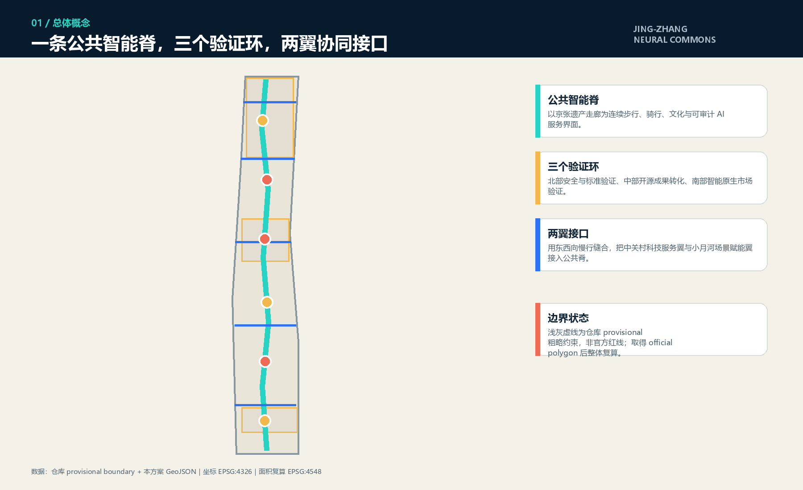
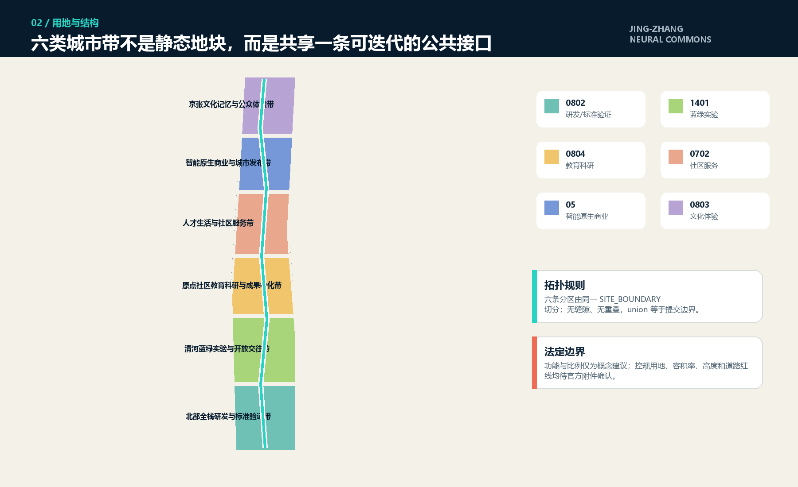
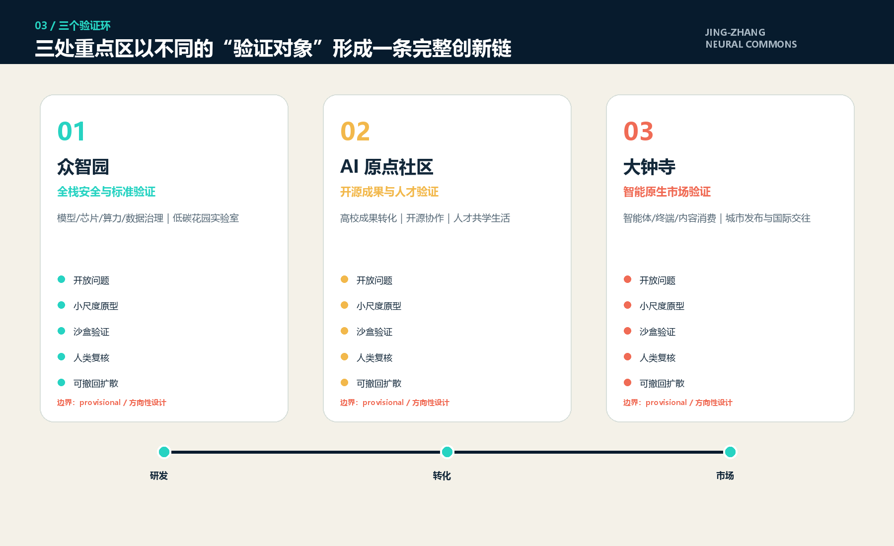
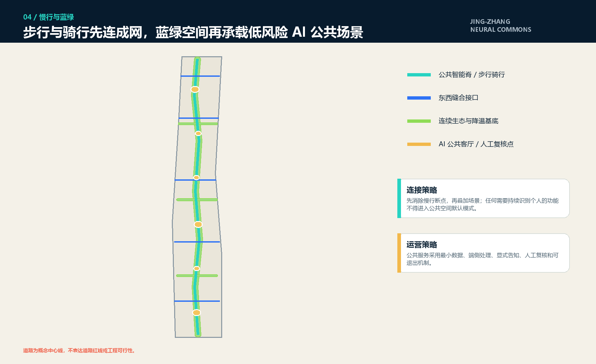
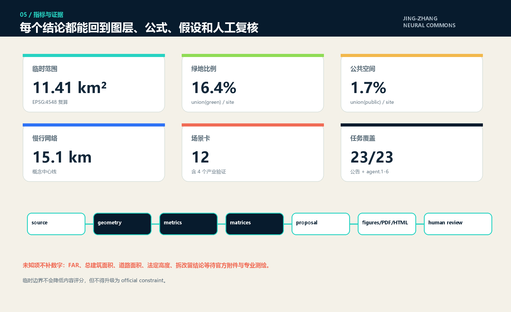

京张智脉：可验证、可迭代的 AI 公共基础设施带
以百年京张铁路遗产为公共智能脊，构建北部安全标准验证、中部开源成果转化、南部智能原生市场验证三环，以及连接中关村科技服务翼和小月河场景赋能翼的开放城市接口。
京张智脉：可验证、可迭代的 AI 公共基础设施带
> **Jing-Zhang Neural Commons**。本方案不是把“AI”贴到建筑表面，而是把城市变成一套公众可理解、专业人员可复核、项目可以小步试错并随时撤回的创新基础设施。所有空间建议均为概念建议和专业深化素材，不替代法定规划，不构成政府审定、投资、征拆、建设或运营承诺。
设计依据与资料清单
本方案首先接受资料边界，而不是用想象填补空白。官方公告用于确认三层工作范围、三处重点区的名称与约面积、总体目标和任务；智能体任务书用于确认三大定位、五大功能、六项 agent 任务以及人本治理边界。[source:OFFICIAL-ANNOUNCEMENT] [source:AGENT-TASKBOOK] [standard:PROJECT-OFFICIAL-ANNOUNCEMENT] [standard:PROJECT-AGENT-OPEN-CALL-TASKBOOK]
仓库 source_registry 将资料分为 formal-ready、background-only、provisional-only 和不可用四类；本方案只把已批准资料用于其允许用途。[source:SOURCE-REGISTRY] [source:PROCESSED-FACT-PACK] 专业判断采用《城市设计管理办法》《控制性详细规划编制审批办法》以及国土空间用地分类本地快照，但这些标准不能反向证明本项目已有法定控规条件。[source:SITE-PACKAGE] [standard:MOHURD-URBAN-DESIGN-MEASURES] [standard:MOHURD-CONTROL-DETAILED-PLANNING] [standard:MNR-LAND-USE-CLASSIFICATION-GUIDE] [standard:MOHURD-ARCH-DESIGN-DEPTH-2016]
当前官方精确 polygon、CAD/GIS、道路红线、现状建筑、权属、市政和工程条件均未进入公开仓库。site_boundary.geojson 与三个重点区来自维护者依据官方文字和约面积整理的 provisional 粗略几何，仅用于生成、展示与入库自检，不作为官方红线、审批或精确面积依据。[source:BOUNDARY-SOURCE] [source:KEY-AREA-SOURCE] [data:geometry/site_boundary.geojson#SITE-001] [depth:existing_conditions_diagnosis] [depth:risk_missing_data]

三层范围工作框架
**统筹研究范围 43.6 km²**回答“海淀如何在区域创新网络中形成差异化”；**总体设计范围约 11.4 km²**回答“AI 创新如何形成连续城市空间”；**三处重点区域约 368.4 ha**回答“哪些机制可以在不同城市环境中先验证”。面积是公告约值；提交几何在 EPSG:4548 下的临时复算值为 [metric:site_area_sqm]，不将二者混同。[depth:three_level_scope_framework]
三层范围通过同一逻辑逐级传导：统筹层建立“高校/平台—开源社区—企业—场景—资本—治理”的协同链；总体层以京张遗产走廊形成一条公共智能脊；重点区分别承担安全标准、成果转化和市场体验三种验证。三处重点区计数为 [metric:key_area_count]。land_use.geojson 以六条共享边界的概念功能带覆盖全部临时范围，union 与 SITE_BOUNDARY 一致；它是可复算的设计假设，不是法定用地。[data:geometry/land_use.geojson#LU-001] [metric:land_use_area_sqm] [depth:overall_spatial_structure] [depth:land_use_layout]
官方 polygon 到位后必须同时替换 site_boundary 与 key_areas，重新切分 land use，裁剪 buildings/roads/green/public/phasing，重算全部面积和比例，再生成五张图、HTML 和两份 PDF；不能只换一条边界线。

统筹研究范围产业与未来城市研究
总体概念、名称与识别系统
主名称“**京张智脉**”包含三层含义：京张铁路是时间之脉，开放创新是知识之脉，公众可以看见并质询的 AI 服务是治理之脉。英文名 **Jing-Zhang Neural Commons** 强调 commons，而不是封闭园区。标志方向使用两条不断开的轨道线与一个开放节点组成“JZ/N”负形；色彩为遗产深蓝、开放青绿、审慎金黄，禁止使用未授权企业 Logo、人物肖像和专有字体。[standard:PROJECT-AGENT-OPEN-CALL-TASKBOOK]
三大定位被转译为三种体验：百年京张文化带提供可阅读的时间连续性；都市 AI 生活体验带提供可选择、可退出的公共服务；AI 融合创新带提供可验证、可复用的试验协议。五大功能分别落在全栈研发、全球生态、AI+场景、智能活力城市与治理话语权五套接口上。三区不是三个孤岛：众智园输出标准与安全能力，原点社区连接开源人才与成果，大钟寺形成市场反馈；中关村科技服务翼提供资本、知识产权和专业服务，小月河场景赋能翼提供真实但受控的公共场景。[depth:overall_spatial_structure]
七个公开案例的可迁移经验
| 案例类型 | 可迁移机制 | 不直接复制的内容 | |---|---|---| | Boston Kendall Square | 高校—企业—公共空间短链协作 | 企业名单与租金结论 | | Toronto MaRS | 创业服务、医院与大学接口 | 项目投资和治理结构 | | London Knowledge Quarter | 步行尺度知识网络与文化机构联动 | 机构承诺 | | Paris-Saclay | 研究设施、人才生活与慢行系统协同 | 大尺度新城模式 | | Seoul Digital Media City | 内容技术与公众体验结合 | 地产开发强度 | | Singapore one-north | 多阶段园区运营与公共试验 | 土地政策复制 | | Helsinki Kalasatama | 城市服务试验、居民参与、数据伦理 | 已部署技术成效 |
这些案例只作为背景比较，不支撑本项目红线或控制指标。可迁移的是“接口”：共享仪器预约、开源成果路演、测试前伦理审查、公共空间反馈、人才居住服务与长期社区运营；不可迁移的是具体企业、投资、财政、土地和绩效数字。[source:SOURCE-REGISTRY]
总体设计范围城市更新与控规深度城市设计
空间结构为“**一脊、三环、六段、十二节点**”。一脊是京张智脉，优先连接步行、骑行、文化记忆与低风险公共 AI；三环对应三处重点区的验证对象；六段对应科研、蓝绿、教育、社区、商业与文化功能；十二节点承载场景卡。所有空间从公共界面开始，而不是从新增建筑量开始。[data:geometry/roads.geojson#ROAD-001] [data:geometry/public_space.geojson#PUBLIC-001] [depth:traffic_rail_slow_parking] [depth:blue_green_public_space]
更新采用“四步低扰动协议”：第一步调查权属、结构、消防、文保和运营状态；第二步优先保留可用结构并进行可逆性改造；第三步用轻量模块验证共享实验、路演和社区服务；第四步只有在公共价值、承载力和法定审批均通过后才讨论永久建造。buildings.geojson 只是十二个可逆建造/适应性改造原型的位置关系，不是现状建筑盘点，也不是拆改留结论。[data:geometry/buildings.geojson#BLDG-001] [metric:building_footprint_area_sqm] [metric:building_density] [depth:retain_renovate_demolish]
由于缺少已批 FAR、高度、建筑规模和道路红线，本方案明确把 [metric:total_floor_area_sqm]、[metric:floor_area_ratio]、[metric:road_area_sqm]、[metric:road_ratio] 保持为 unknown。建筑高度采用“向遗产公园与蓝绿走廊降阶、节点处形成可识别但不追求地标竞高、重要视廊经实测校核”的方向性规则，等待 official controls 后逐地块深化。[depth:development_intensity_controls] [depth:height_massing_character]
重点区域详细设计
众智园：全栈安全与标准验证环
定位是“花园里的验证基础设施”。空间上以清河生态界面、开放测试庭院和研发原型形成低密度连续网络；产业上串联模型、芯片、算力、数据与安全治理；公共界面展示测试问题、方法、失败与人工复核，而不展示未经证实的能力。对外交通只提出跨五环慢行与接驳研究接口，不作桥隧或工程可行性结论。[data:geometry/key_areas.geojson#PROV-KEY-001] [depth:three_key_area_detailed_design]
北京 AI 原点社区：开源成果与人才验证环
定位是“近校型开源城市客厅”。围绕高校成果转化，设置开源发布场、共享原型工坊、人才共学庭、短住与社区服务接口；五道口和清华东路西口的轨道接驳只以步行连续性、非机动车停放和导向系统为概念建议。更新优先使用可逆室内改造与首层开放，避免以大拆大建换取形象。[data:geometry/key_areas.geojson#PROV-KEY-002]
大钟寺：智能原生市场验证环
定位是“城市型智能体发布与体验街区”。四象限步行连接、公共发布场、智能终端体验、内容消费和国际交往构成核心；任何涉及支付、推荐或个人数据的试验都必须具备告知、最小化、人工客服和退出通道。大钟寺站一体化只提出界面与流程目标，不宣称交通组织已获批。[data:geometry/key_areas.geojson#PROV-KEY-003]

AI 创新生态、人才画像与 AI+ 场景
六类用户画像是：研究人员（需要仪器、算力与同行评审）、早期创业者（需要小额试验与首批用户）、产业工程师（需要标准与供应链协同）、周边居民（需要便利且不被监控的服务）、学生与访客（需要可理解的学习路径）、公共管理与一线服务人员（需要可解释、可接管的辅助工具）。[metric:persona_count]
十二张场景卡
| ID | 场景 / 空间 | 用户与数据 | 人工复核 / 风险边界 | |---|---|---|---| | S01* | 模型安全红队花园 / 众智园 | 研究者；合成与授权测试集 | 上线前伦理审查；不接入公共个人数据 | | S02* | 端侧算力能耗沙盒 / 众智园 | 工程师；设备遥测 | 运维人员确认；不作供能承诺 | | S03* | 机器人慢行共存测试 / 北部开放庭院 | 开发者、行人；匿名事件日志 | 安全员随时接管；限定速度和时段 | | S04* | 智能体互操作验证站 / 大钟寺 | 企业；标准化测试消息 | 测试结果人工签发；供应商中立 | | S05 | 开源成果翻译台 / 原点社区 | 学生、创业者；公开论文与授权代码 | 专家校核；显示来源与许可证 | | S06 | 人才生活服务 Copilot / 社区服务带 | 新居民；主动提供的办事信息 | 人工窗口兜底；不做资格自动裁决 | | S07 | 无障碍出行助手 / 公共智能脊 | 视障、老年用户；端侧定位 | 可关闭定位；路线异常人工反馈 | | S08 | 公园微气候建议 / 蓝绿带 | 游客；公开气象与现场传感 | 仅建议不预警；传感器状态公开 | | S09 | AI+教育共学桌 / 原点社区 | 学生、教师；课程授权资料 | 教师控制；不做高风险自动评分 | | S10 | AI+医疗导诊演示 / 公共服务节点 | 访客；不存储健康信息的模拟输入 | 医护复核；明确非诊断工具 | | S11 | AI+法律公共信息台 / 大钟寺 | 小微企业、居民；公开法规 | 律师志愿复核；不替代法律意见 | | S12 | 京张记忆叙事站 / 南部文化带 | 市民；公开史料与口述授权 | 史料编辑复核；可纠错和版本记录 |
星号为 4 个产业测试验证场景，超过任务书的 3 个下限；总计 12 张场景卡。[metric:scenario_card_count] [metric:industry_test_scenario_count] 每张卡按“问题—最小数据—限定空间—人工接管—退出—评估—扩散”运行，禁止持续人脸识别、隐性画像、无法申诉的自动决策和把试验写成已批准运营。[standard:PROJECT-AGENT-OPEN-CALL-TASKBOOK]
用地、建筑规模与拆改留方案
六类用地带采用 MNR 代码语义，但在属性中明确 statutory_status=conceptual_only_pending_official_controls。科研与教育带支撑知识生产，社区服务带支撑人才日常，商业带承接智能原生产品验证，文化与绿地带保证公共性和遗产连续性。[standard:MNR-LAND-USE-CLASSIFICATION-GUIDE] [data:geometry/land_use.geojson#LU-006]
拆改留不按地图猜测：在缺少现状普查时，只给出“保留优先—适应性改造—可逆增补—拆除待证”的判定流程。每栋建筑需补齐年代、结构、权属、消防、能耗、使用率、历史价值和租约后才可分类。图层中的 prototype 不代表具体建筑结论。[depth:retain_renovate_demolish]
交通、轨道、市政与公共服务设施
交通策略以 [metric:slow_mobility_length_m] 的概念中心线网络表达：一条南北公共智能脊和五条东西缝合接口，优先修复公园断点、轨道站到重点区的最后一公里、非机动车停车与无障碍连续性。[data:geometry/roads.geojson#ROAD-002] 线路长度用于比较方案网络完整性，不是工程里程。
市政与新基建采用“边缘节点 + 公共协议”：端侧推理优先、敏感数据不出场景、算力和能源使用可计量、故障可降级、服务可人工接管。设施选址需与现有电力、通信、给排水、消防和地下管线共同校核；当前只提出需求清单，不作容量与可行性结论。[depth:municipal_new_infrastructure]

蓝绿空间、公共空间与城市风貌
蓝绿系统不是景观背景，而是人才交往、气候适应和低风险场景的共同底盘。green_space.geojson 由一条 85 m 概念生态脊和三条横向缝合带 union 复算；[metric:green_space_area_sqm] 与 [metric:green_ratio] 只描述当前概念图层。六个公共客厅形成 [metric:public_space_area_sqm] 和 [metric:public_space_ratio]，重叠部分去重。[data:geometry/green_space.geojson#GREEN-001] [data:geometry/public_space.geojson#PUBLIC-003]
四个 AI 朝圣/荣誉节点为：**开源第一行代码墙**（展示可核验开源贡献而非名人崇拜）、**AI 安全失败博物馆**（展示失败案例与修复）、**百年京张—百年算法时间站**（并置铁路与计算史）、**全球开发者荣誉轨**（按公开规则记录社区贡献）。它们都是概念节点，视觉系统使用原创几何、开放字体或系统字体，不擅用企业标识。[metric:pilgrimage_landmark_count]
城市风貌强调“老结构可读、新介入可逆、夜间照明克制、设备界面透明”。临遗产与蓝绿界面降低体量，公共首层保持可进入，技术设备展示运行状态和数据边界；任何大型地标需通过历史文化、景观视廊、结构和公共安全专项论证。[standard:MOHURD-URBAN-DESIGN-MEASURES]
更新项目清单、实施政策与分期计划
| 分期 | 项目包 | 前置条件 | 成功判据 | |---|---|---|---| | Phase 1 验证先行 | 断点普查、临时导视、3 个公共客厅、S01/S05/S12 | official 数据登记、公众参与、场景伦理审查 | 步行可达改善、退出机制有效、投诉可闭环 | | Phase 2 网络成环 | 三验证环、共享实验接口、社区服务、蓝绿缝合 | 交通/市政/消防/权属深化 | 场景通过安全评估并可人工接管 | | Phase 3 开放扩散 | 全球活动体系、跨区协同、成熟原型常态化 | 法定审批、运营主体与维护预算 | 公共价值、运营持续性和开放复用 |
三个阶段由 phasing.geojson 的无重叠分区表达，计数为 [metric:phase_count]。[data:geometry/phasing.geojson#PHASE-001] [depth:renewal_project_list] [depth:phasing_implementation]
长期运营采用“一年一议题、四季四循环”：春季开源城市议题发布，夏季安全与场景沙盒，秋季全球开发者大会和公众体验周，冬季独立评估与版本归档。开发者社区通过公开 issue、场景 RFC、微资助评审、贡献记录和维护者轮值运行；活动、招商、资金与政策均为建议，需由主办/运营主体另行决策，不写成既定安排。
指标体系、面积复算与合规矩阵
指标分三层：**空间底盘**（面积、绿地、公共空间、慢行）、**创新运行**（场景数量、验证周期、开源复用）、**公共价值**（可退出率、人工接管成功率、投诉闭环、无障碍可用性）。只有可由当前 GeoJSON/正文直接复算的项目标为 known；依赖 official controls 或现状调查的项目保持 unknown。[depth:metrics_recalculation]
已知指标全部可沿 geometry → metrics → matrices → proposal → figures/PDF/HTML 回溯。23 项必答任务（公告 1.3/1.4/1.5 与 agent.1—agent.6）均在 compliance_matrix.json 中建立章节、图层、指标、图纸、来源、假设和自检链；6 条 mandatory standard 在 standard_matrix.json 中响应；15 项 formal depth 均在 design_depth_matrix.json 中给出证据。[standard:MOHURD-ARCH-DESIGN-DEPTH-2016]

风险、版权与合规说明
1. **边界风险**：当前 geometry 是 provisional；不得用于红线、审批、征拆、精确面积或专业评分。official polygon 到位后全包重算。 2. **控制风险**：FAR、高度、建筑规模、道路红线、市政、消防、权属和文保控制待官方附件与专业核查。[depth:risk_missing_data] 3. **技术风险**：场景先沙盒后扩散，采用最小数据、端侧处理、显式告知、人工复核、可退出和事件审计。 4. **实施风险**：所有项目、活动、政策、资金和运营主体均为概念建议，不构成承诺。 5. **版权风险**：正文、GeoJSON、图、HTML 与 PDF 由本 agent 基于仓库公开/清权资料生成；未使用外部地图截图、新闻图片、企业 Logo、人物肖像或未授权渲染。详见 report/copyright_statement.md。 6. **专业责任**：本包是 AI 开放共创成果，不替代城乡规划、建筑、交通、市政、景观、文保、消防、法律与数据保护专业人员的签章和判断。
临时约束另存为 constraints.geojson，其属性仍保持 provisional_constraint，用于提醒所有派生图层受替换规则约束。[data:geometry/constraints.geojson#CONSTRAINT-001]
参考资料
以下公开导航文件对应本方案的资料与边界说明。[source:SITE-PACKAGE] 详细结构化来源、许可、用途与禁止用途见同包 sources.json；标准快照、任务书和 provisional geometry 的逐项引用已在正文各节标注。
资料对设计判断的作用分为四层：官方公告只确认工作目标、三层范围文字、重点区名称和约面积；智能体任务书确认命名、生态、场景、地标、文化与运营任务；专业标准用于组织城市设计、用地术语和成果深度；临时 geometry 只用于让图层闭合、指标可复算和成果可视化。由于临时边界不能证明法定用地、道路红线、建筑高度、容积率、权属、市政、消防或工程条件，本方案把这些项目保留为 unknown 或待专业确认，不从示意图反推确定结论。取得清权 official 文件后，来源登记、坐标转换、面积复核、图层裁剪、指标、矩阵、正文、图片、HTML 和 PDF 必须作为同一版本链更新；若来源、许可或坐标系不能核验，则不得升级其权威等级。[source:SOURCE-REGISTRY] [source:BOUNDARY-SOURCE] [depth:risk_missing_data]
brief/public-brief.md（公开任务书导航）brief/README.md（公开数据与边界说明）